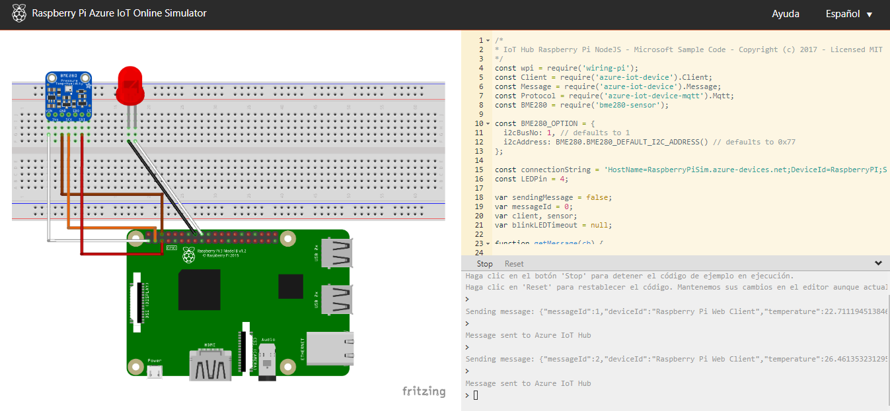

El uso de simulaciones electrónicas ha revolucionado la forma en que diseñamos y probamos circuitos. Anteriormente, el desarrollo requería un proceso largo y costoso de prototipado físico, pero ahora, herramientas como Proteus, KiCad y Tinkercad permiten simular circuitos de forma virtual, ahorrando tiempo y recursos. Estas plataformas brindan a los estudiantes y profesionales la oportunidad de validar diseños y experimentar sin necesidad de hardware físico. Además, los simuladores son cada vez más accesibles, lo que facilita su uso en proyectos académicos y personales. Con estas tecnologías, cualquiera puede visualizar el comportamiento de un circuito y hacer ajustes sobre la marcha.
La cadena de conexión principal: Esta cadena de conexión actúa como una credencial que autentica y permite que el dispositivo se conecte de forma segura al IoT Hub, contiene varios datos importantes como
En la página SIMULADOR RaspberryPI en donde apreciamos él simulador en él código de la derecha, en la línea 15 copiaremos este código y lo utilizaremos allí en esa línea 15
Ya estaría configurado él dispositivo para recibir datos, pero no podríamos verlos a menos que le demos al botón de run o ejecutemos él comando:
npm start
Es claro que se debe cambiar CONNECTION_STRING= por él valor de nuestra cadena de coneccion principal, y así obtendremos los datos del sensor
